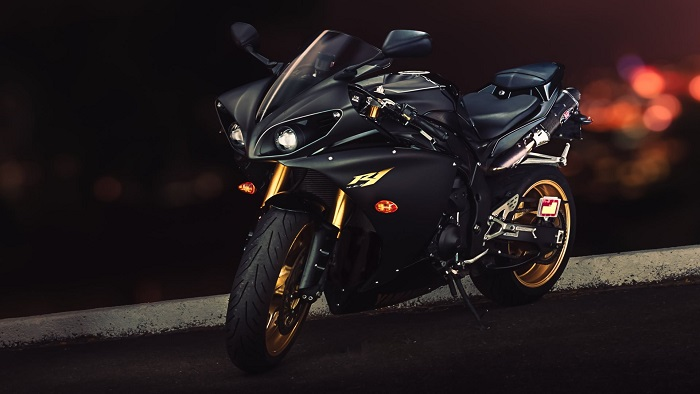

Yamaha YZF-R1
YZF-R1 – japoński motocykl klasy superbike firmy Yamaha, zaprezentowany po raz pierwszy na targach EICMA w Mediolanie pod nazwą kodową "08R". Został on całkowicie nowo skonstruowany w celu podbicia rynku bezkompromisowych motocykli sportowych oraz zastąpienia już przestarzałego i nie cieszącego się zbytnią popularnością motocykla Yamaha YZF 1000 R Thunderace. Koncepcją modelu YZF-R1 była ekstremalność – był on bardzo lekki (177 kg), a zarazem bardzo mocny (150 KM). W połączeniu z dopracowaną aerodynamiką uzyskano motocykl, któremu pod względem osiągów nie dorównywał wówczas żaden inny.
Dane techniczne/Osiągi
- Silnik: R4-16v DOHC
- Pojemność silnika: 998 cm³
- Moc maksymalna: 133,9 kW (182 KM) 12.500 obr/min (bez doładowania dynamicznego)
- Maksymalny moment obrotowy: 115,5 Nm (11,8 kg-m) 10.000 obr/min (bez doładowania dynamicznego)
- Prędkość maksymalna: 299+* km/h
- Przyspieszenie 0–100 km/h: 2.6 sec
Galeria
